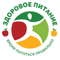
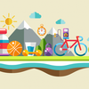
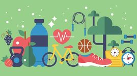

Принципы здоровой жизни
Последние статьи
Как питаться правильно
Двигайтесь каждый день



Здоровый образ жизни — образ жизни человека, направленный на профилактику заболеваний и укрепление здоровья.
Это рационально организованный, активный, трудовой, защищающий от неблагоприятных воздействий окружающей среды, позволяющий до глубокой старости сохранять нравственное, психическое и физическое здоровье.
Актуальность ведения здорового образа жизни вызвана возрастанием и изменением характера нагрузок на организм человека в связи с усложнением общественной жизни, увеличением рисков техногенного, экологического, психологического, провоцирующих негативные сдвиги в состоянии здоровья.
Основные компоненты здорового образа жизни:- Рациональное, сбалансированное здоровое питание
- Оптимальный уровень физической активности
- Соблюдение режима труда и отдыха
- Отказ от вредных привычек

© Принципы здорового образа жизни 2021